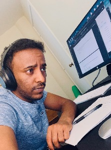

Welcome to Daniel Haile's portal page
At Maharishi International University
February 2021

About me!
My name is Daniel Haile. Originally, I'm from Ethiopia, located on horn of Africa, in east of the continent. When I was a high school student, my dream was to be an engineer. After I completed a high school, I joined to Hawassa university, Ethiopia, five years bachelor degree programe for civil engineering. when I was a fifth year student i.e. same year for my graduation, I got a chance of U.S. diversity visa lottory. I moved to Washington, Seattle since 2017.
When I came to Seattle, I completly changed my mind about my professional goals. I want to be a good software developer. The reason why I want to be a software developer is because of I'm a big fan of technology and I want to know something new in every activity of my life.
My biggest passion is helping people as much as I can and see smiling on their face because that makes me smile too more than anything I do. Sometimes I enjoying myself by watching any kind of sport events like soccer or American football, reading books, watching documentary movies and sketching a drawing.
My class lists this quarter
- CS201 - Procedural programming
- CS203 - Object oriented programming
- CS311 - Discrete Mathematics
- CS221 - Data structure
- CS301 - Introduction to JavaScript
My Favorite movie lists are
"Simple things should be Simple, complex things should be POSSIBLE." - Bill Langley
Assignments